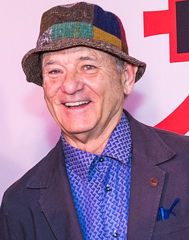
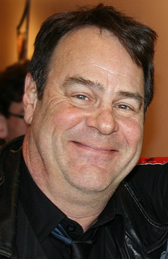
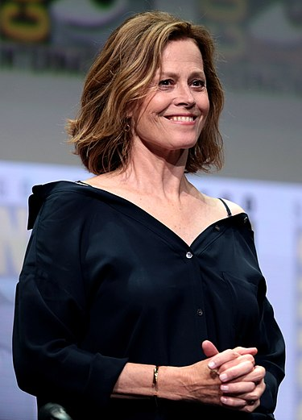
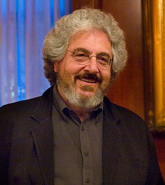
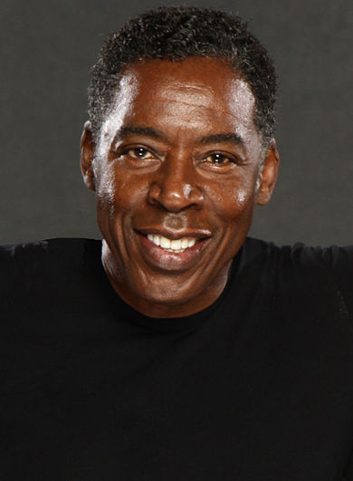
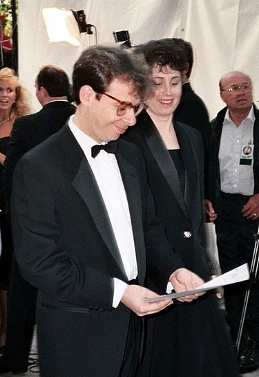
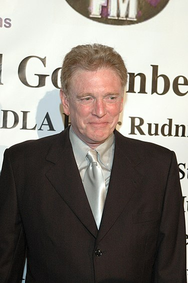
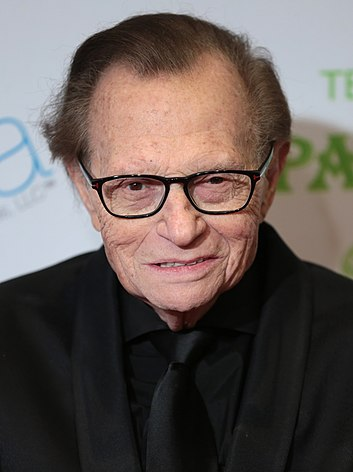

Estos son los actores que protagonizan la película cazafantasmas de 1985. Para saber los papeles que hacen, puedes leer la sinopsis de la película en la pestaña "Película". Si quieres más información sobre los actores, puedes pinchar sobre su nombre y se te redirigirá a una página de Wikipedia donde puedes encontrar mucha información sobre ellos.